수익 화면과 이 영상의 목표
영상은 OnlyFans 통계 화면으로 시작해요. 가운데 그래프 위에 최근 30일 순수익 85,735.20달러가 있고, 괄호 안 총액은 107,169달러예요. 오른쪽 Earnings 칸에는 구독, 팁, 메시지, 게시물, 방송별 금액이 나뉘어 있고, 아래 목록에는 몇 분 간격으로 들어온 메시지 결제가 쌓여 있어요.
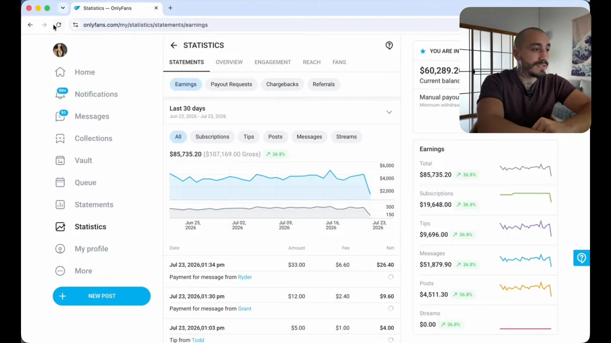
오른쪽 칸의 숫자를 막대로 옮기면 돈이 어디서 나오는지가 보여요. 메시지 결제가 구독료의 2.6배쯤 돼요. 이 사업은 구독보다 1:1 대화에서 돈을 벌어요. 그래서 뒤에 나오는 '대화를 걸게 만드는 장치'가 전략의 중심이 돼요.
채널 이름의 OFM(OnlyFans Management)은 OnlyFans 계정 운영을 대신 맡는 사업을 말해요. 화자가 이 영상에서 보여 주겠다는 건 두 가지예요. 인스타그램 계정을 끝없이 만드는 방법, 그리고 그 계정들로 팔로우와 DM(Direct Message) 같은 대량 행동을 돌려 OnlyFans로 사람을 보내는 방법이에요.
Device Farm과 클라우드폰의 도달
devicefarm.io는 웹 브라우저 안에서 원격 안드로이드폰을 여러 대 켜 두는 서비스예요. 아래 Phones 화면을 보면 카드 하나가 폰 한 대예요. 카드마다 국가(미국), Android 14, Redmi K70이나 Google Pixel 9 같은 기종, 그룹 이름이 붙어 있고, 나머지는 IG-ACC-로 시작하는 이름이에요.
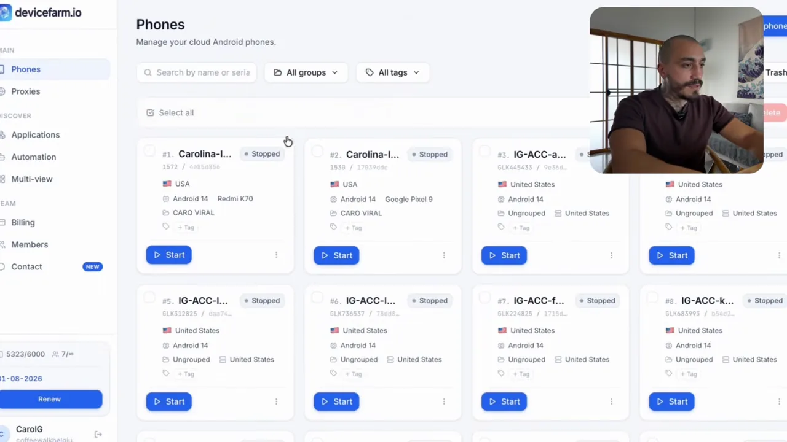
화자의 설명은 이래요. 폰마다 고유한 IP와 기기 지문이 있으니, 계정이 500개여도 인스타그램은 모두 한 사람 것이라고 알아채지 못한다는 거예요. 이 서비스의 쓸모를 '탐지 회피'로 소개하는 셈이에요.
클라우드폰 계정도 도달이 나온다는 주장
화자는 "클라우드폰으로는 릴스 도달이 안 나온다"는 말을 반박하려고 Multi-view 화면에서 계정 두 개를 나란히 열어요. 왼쪽 Carolina-IG-01 프로필에는 팔로워 1,454명이 보여요. 화자는 이 중 하나가 5일쯤 된 계정이고, 다른 계정의 릴스 하나는 2만 3천 조회와 좋아요 380개를 받았다고 말해요.
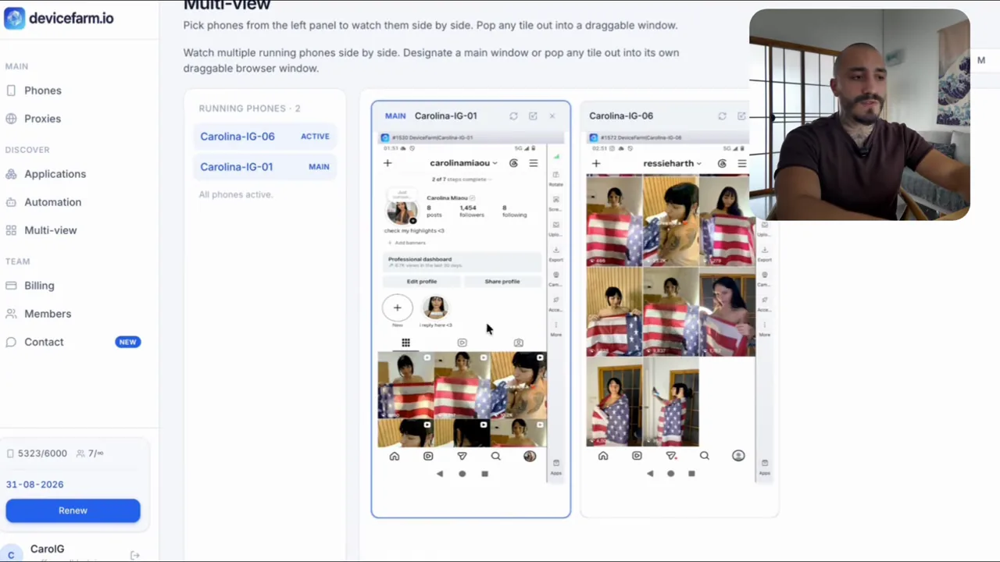
같은 계정에서 바로 다음에 뜨는 화면이 'What happened' 알림이에요. '노출이나 성적 행위' 사유로 게시물 두 개가 삭제됐다고 적혀 있어요. 화자는 이걸 "콘텐츠가 너무 노골적이어서 받은 제재"라고만 짚고, 그래도 다른 영상들은 8천~1만 조회가 나왔다며 넘어가요.
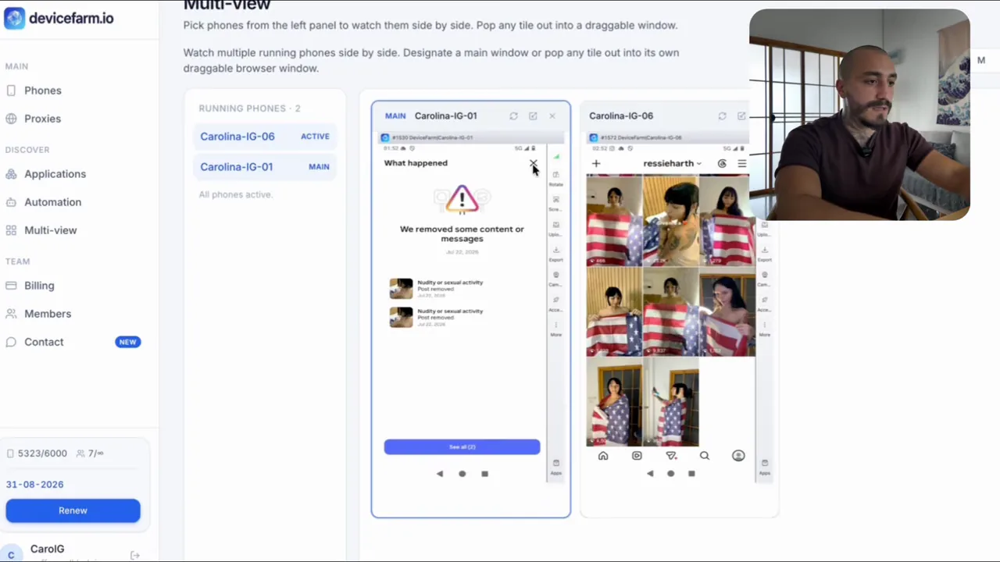
계정 자동 생성 과정
devicefarm.io의 Automation 메뉴에는 미리 만들어 둔 자동화 작업이 카드로 늘어서 있어요. 위쪽 필터에 인스타그램, 틱톡, 페이스북, 유튜브, X, 스레드가 있고, 인스타그램 카드만 봐도 이메일·문자로 계정 만들기, 프로페셔널 계정 전환, 캐러셀·릴스 올리기, 프로필 일괄 편집 같은 작업이 있어요. 화자가 고르는 건 맨 앞의 'CREATION ACCOUNT EMAIL' 계열이에요.
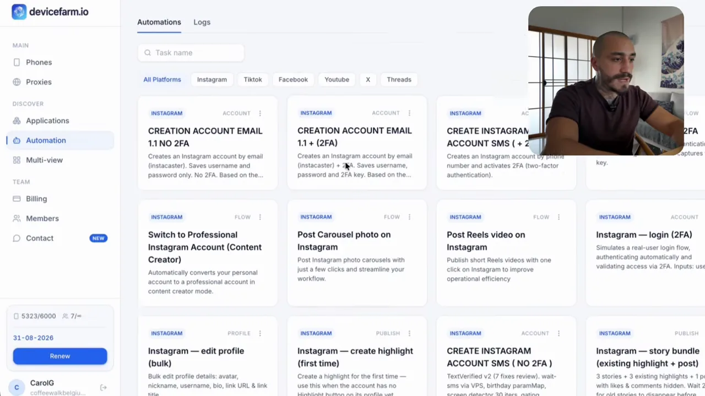
1단계: 프록시를 붙인 폰 만들기
작업을 돌리기 전에 폰부터 만들어요. 위쪽에 프록시 계정 정보를 넣고, 아래 Advanced 칸의 전화번호, 위치, 기기 브랜드, 기기 모델, 기기 이름, 언어는 Auto나 Random으로 둬요. 오른쪽 아래에는 사용 요금이 분당 0.012달러이고 폰을 끄면 과금이 멈춘다는 안내가 있어요. 화자는 프록시로 4G·5G 모바일 프록시를 쓴다고 해요.
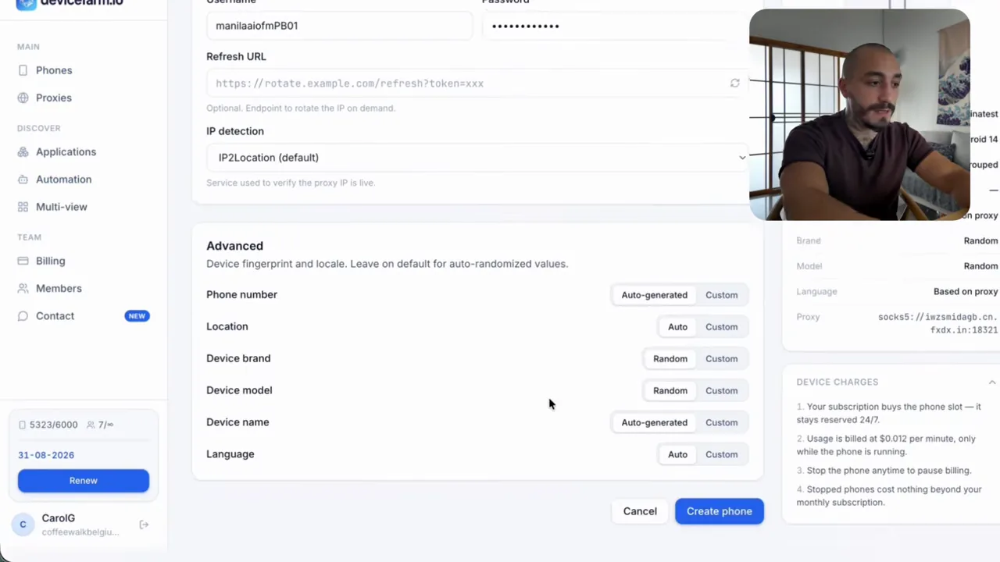
2단계: 계정 생성 작업 설정
작업 화면에서는 폰을 고르고, Instacaster API(Application Programming Interface) 키를 넣고, 계정 이름을 한 줄에 하나씩 적어요. 키 아래 작은 글씨에 계정을 이메일(Instacaster)로 만들고 개당 약 0.10달러가 든다고 적혀 있어요. 아래쪽 숫자 두 개가 묶음 설정이에요.
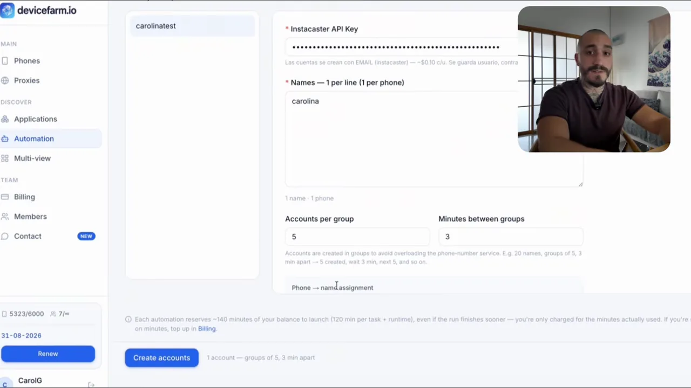
| 설정 | 영상 속 값 | 뜻 |
|---|---|---|
| 메일 인증 코드 | 개당 약 0.10달러 | Instacaster에서 받아 와요 |
| Accounts per group | 5 | 한 번에 만드는 계정 수 |
| Minutes between groups | 3 | 묶음 사이 대기 시간(분) |
| 시작까지 | 5분 | 작업을 만든 뒤 대기 |
| 계정 하나 생성 | 평균 7~8분 | 화자의 체감 시간 |
화면 안내문은 묶음으로 나누는 이유를 '전화번호 서비스에 과부하를 주지 않으려고'라고 적어 둬요. 화자는 폰 50대를 걸어 두면 5개, 다시 5개 식으로 알아서 이어 간다고 설명해요.
3단계: 손대지 않고 가입 끝내기
Logs 탭에 작업이 등록되고 5분 뒤에 시작돼요. 영상은 이 구간을 빠르게 돌려서, 화면 속 폰이 혼자 가입 화면을 넘기고 비밀번호를 넣는 모습을 보여 줘요. 마지막 화면은 가입이 끝난 인스타그램 첫 화면이에요. 위쪽에 'carolinatest'라는 폰 이름이 보이고, 추천 계정 목록이 떠 있어요.
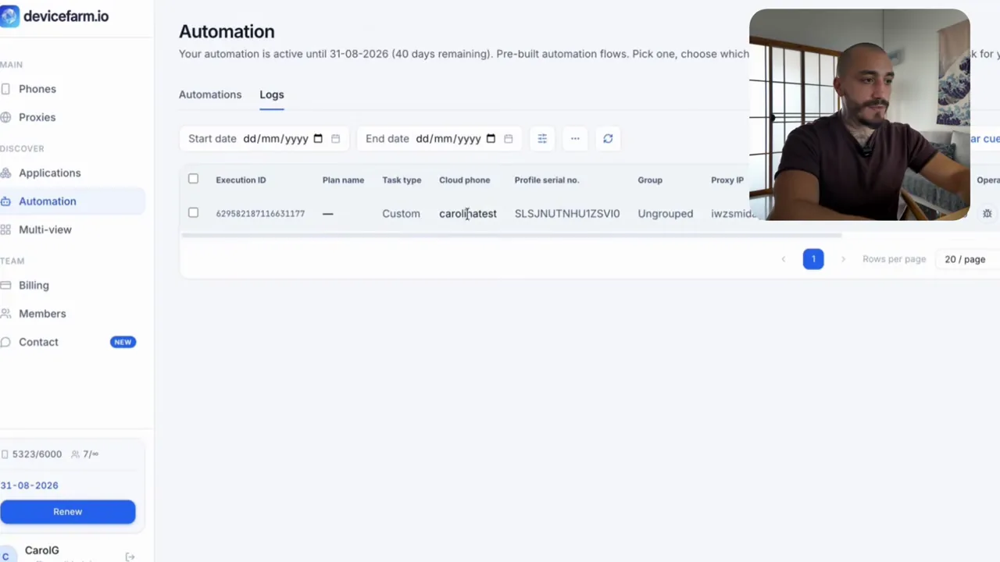
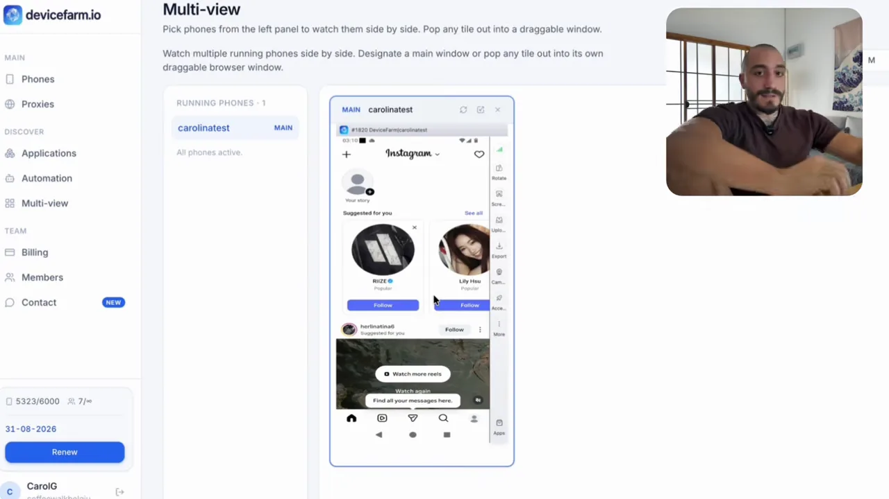
웹 자동화 패널과 AI 챗봇
만든 계정은 다른 웹 자동화 패널로 옮겨요. 패널 위쪽 숫자 칸에 전체 계정 191개, 활성 179개, 로그인 실패 12개가 보여요. 아래 표에는 계정마다 로그인 상태, 팔로우 횟수, 보낸 메시지, 프록시 주소, AI 페르소나 칸이 있어요. 왼쪽 메뉴에는 채팅, 메시지 요청, 팔로우 요청, 팔로우, 스토리 보기, 워밍업, 프로필 편집, 피드·스토리 올리기, 대량 DM이 나란히 있어요.
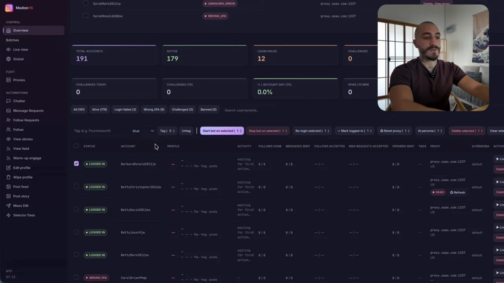
화자는 메뉴 중 팔로우 자동화와 채팅 자동화만 써요. 실시간 보기(Live view)로 계정 화면을 원격으로 열어 직접 조작할 수도 있어요.
패널 하나는 VPS(Virtual Private Server) 한 대에서 돌아가요. 서버 메모리에 한계가 있어서 패널 하나에 계정 1만 개를 올릴 수는 없어요. 그래서 화자는 이런 패널을 50개쯤 두고 계정을 나눠 올린다고 해요.
사람인 척하는 챗봇
시연에서는 화자가 자기 폰으로 봇 계정에 DM을 보내요. 아래 화면에서 보라색이 화자, 회색이 봇이에요. 봇은 먼저 6초짜리 음성 메시지를 보내고, "뭐 해?"라는 질문에 "점심 막 만들어서 먹으려던 참이야, 너는?"이라고 답해요. 화자가 엉뚱한 농담을 던지자 봇은 그걸 받아 "든든한 간식이네"라고 이어 가요.
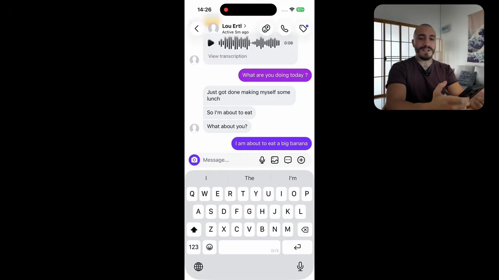
You see it's replying normally, chatting, making the guy fall in love.
보세요, 평범하게 답하고 대화하면서 남자가 사랑에 빠지게 만들어요.
— 영상 07:19
전체 전략 한 장으로
마지막에 화자가 전략을 한 번에 정리해요. 말로만 설명한 흐름을 그림으로 옮기면 이래요.
flowchart LR A["devicefarm.io
계정 자동 생성"] --> B["웹 패널로 이동"] B --> C["팔로우 봇이
사람들 팔로우"] C --> D["상대가 팔로우 수락"] D --> E["AI 챗봇이 대화"] E --> F["OnlyFans로 보내기"]
화자는 시연 계정에 아직 프로필 사진도 아무것도 없다며, 진짜 같은 프로필 사진과 가짜 팔로워를 채우는 작업이 남았다고 말해요. 계정이 사람처럼 보이게 꾸미는 일까지 전략의 일부라는 뜻이에요.
정리하면 이 구조는 세 군데에서 플랫폼 규칙과 부딪혀요. 자동화로 계정을 만드는 것, 실제 사람이 아닌 신원을 내세우는 것, 상대가 사람과 대화한다고 믿게 만드는 것이에요.